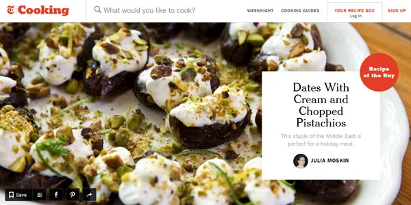
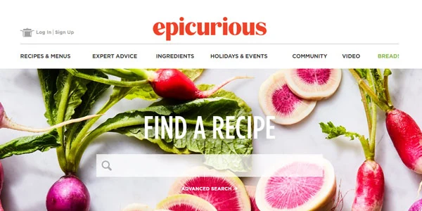
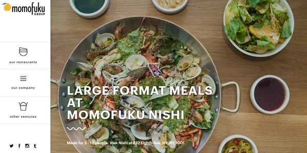
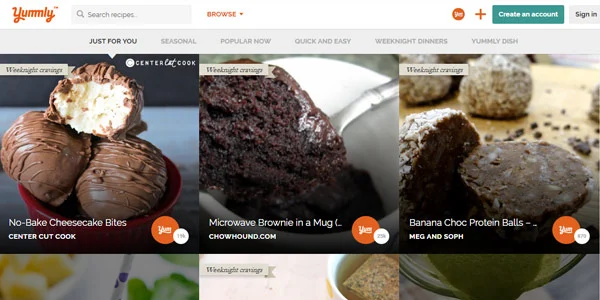
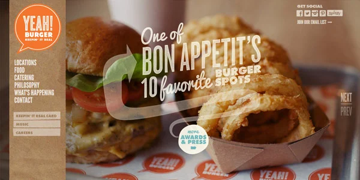
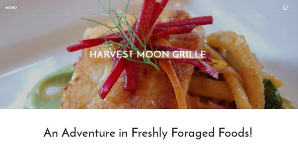
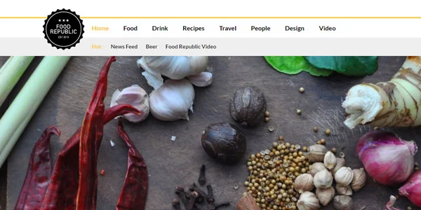
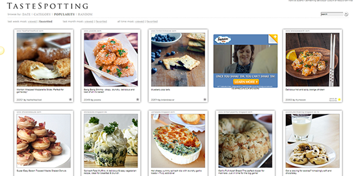
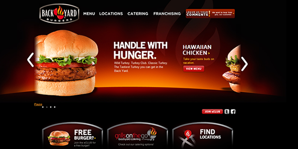
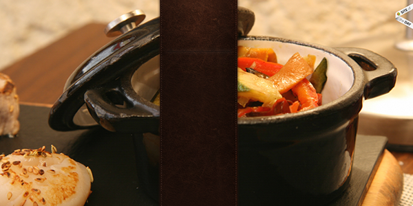

Top 10 Most Appetizing Designs for Food Websites
Some food sites splash mouth-watering pictures of delicious dishes across
their pages and make us want to rush right out to eat. Others use the vibrant colors of food as
a jumping-off point for a beautiful design. And still others integrate it into the functionality
of the site, turning food into buttons, page loading devices, and more. The following websites
not only make your mouth water, they demand that you explore them to the fullest extent so that
you can see what’s hidden in every nook and cranny. In short, they’re not only gorgeous, they’re
fun and clever and easy to use, too. Anyone getting hungry?









